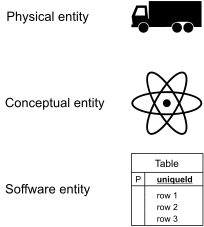
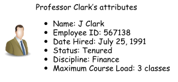
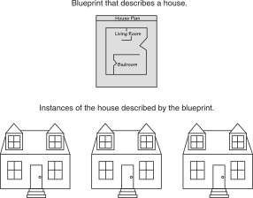
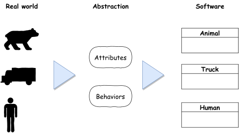
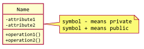
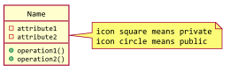

classDiagram
class FullClass {
-attribute1
-attribute2
+operation1()
+operation2()
}
2 CLASSES AND OBJECTS
2.1 What is an object?
Definition
An object is an entity with a well-defined boundary and identity that encapsulates state and behavior.
- State is represented by attributes and relationships.
- Behavior is represented by operations, methods, and state machines.
- Informally, an object represents an entity, either physical, conceptual, or software.

An Object Has State
- State is a condition or situation during the life of an object, which satisfies some condition, performs some activity, or waits for some event.
- The state of an object normally changes over time.

An Object Has Behavior
- Behavior determines how an object acts and reacts.
- The visible behavior of an object is modeled by a set of messages it can respond to (operations that the object can perform).
An Object Has Identity
- Each object has a unique identity, even if the state is identical to that of another object.
2.2 What is a class?
Definition
A class is a description of a set of objects that share the same attributes, operations, relationships, and semantics. An object is an instance of a class.

- A class is an abstract definition of an object.
- It emphasizes relevant characteristics.
- It suppresses other characteristics.
- It defines the structure and behavior of each object in the class.
- It serves as a template for creating objects.
- Classes are not collections of objects.
Representing Classes in the UML
A class is represented using a rectangle with three compartments:
- The class name
- The attributes
- The operations
A class can be represented using a simple rectangle:
classDiagram
class SimpleClass
What Is an Attribute/Operation?
An attribute is a named property of a class that describes the range of values that instances of the property may hold.
A class may have any number of attributes or no attributes at all.
An operation is the implementation of a service that can be requested from any object of the class to affect behavior. In other words, an operation is an abstraction of something you can do to an object that is shared by all objects of that class.
A class may have any number of operations or none at all.
2.3 OO Design
Object-oriented design
- Abstract Data Types (ADT)
- Divide project into a set of cooperating classes
- Each class has a very specific functionality
- Think of a class as similar to a data type
- Class can be used to create instances of objects
Mapping the real world to software

Designing process
Identifying classes
- Abbott and Booch:
- use nouns, pronouns, noun phrases to identify objects and classes
- note: not all nouns are really going to relate to objects
- Coad and Yourdon:
- identify individual or group “things” in the system/problem
- Ross:
- common object categories: people, places, things, organizations, concepts, events
Identifying behaviors
- Decide whether behavior is accomplised by a single class or through the collaboration of a number of ``related’’ classes
- Static behavior: behavior always exists
- Dynamic behavior: depending of when/how a behavior is invoked, it might or might not be legal
- Look for verbs in problem description
Example 1
Game “Tetris”, possible classes:
- Board
- Block (square block)
- Piece (composed of several blocks)
- Player (is it necessary?)
- Line of Blocks
Example 2
- e-Shopping Website, possible classes:
Product - Attributes: Name, ID, price, status, manufacturer’s name, images, technical description.
Product Category - Attributes: Name
Manufacturer - Attributes: Name, Country, Website
Example 3
Website “National Foolball Competition”
- People: Player, Referee, Coach, Team Manager…
- Places: Stadium, City…
- Things: Ball (is it necessary?)
- Organizations: Team, National Football Association
- Concepts: Half, Round, Season…
- Events: Match (is this a concept or an event?), Goal
Example 4
Joe’s Automotive Shop services foreign cars and specializes in servicing cars made by Mercedes, Porsche, and BMW. When a customer brings a car to the shop, the manager gets the customer’s name, address, and telephone number. The manager then determines the make, model, and year of the car and gives the customer a service quote. The service quote shows the estimated parts charges, estimated labor charges, sales tax, and total estimated charges.
- Finding the classes
2.4 Classes and Objects in C++
class <Class Name>
private:
<private attributes>
<private methods>
public:
<public attributes>
<public methods>
};private: only visible to the class itself.public: can be use from inside of the class or any client outside
UML
- Using symbol

- Using icon

An example
- A class models a date
class CDate {
private:
int m_iDay, m_iMonth, m_iYear;
public:
CDate();
int getDay(); // return day
int getMonth(); // return month
int getYear(); // return year
...
};- A class models a human
class Human {
// Data attributes:
private:
string Name;
string DateOfBirth;
string PlaceOfBirth;
string Gender;
// Methods:
public:
void Talk(string TextToTalk);
void IntroduceSelf();
...
};Scope resolution operator ::
- The two colons
::are called the scope resolution operator. - It identifies methods or attributes as members of a certain class
- For example:
CDate::getDay()
CDate::getMonth()
Separation declaration from definition
//keep in one file
class CDate {
private:
...
public:
int getDay();
...
};
int CDate::getDay() {
return m_iDay;
}// header file
class CDate {
private:
...
public:
int getDay();
...
};// implementation file
int CDate::getDay() {
return m_iDay;
}Inline Member Functions
When the body of a member function is written inside a class declaration, it is declared inline
//keep in one file
class CDate {
private:
...
public:
int getDay() {
return m_iDay;
}
...
};Using const with Member Functions
- When the key word
constappears after the parentheses in a member function declaration, it specifies that the function will not change any data stored in the calling object.
class CDate {
private:
...
public:
int getDay() const {
return m_iDay;
}
...
};Instantiating an Object of a Class
- Instantiating an object of type
class Humanis similar to creating an instance of another type:
double Pi = 3.1415;
Human Tom;
Human Jerry = Human();- Alternatively, we would dynamically allocate for an instance of class
Humanusingnew:
int* pNumber = new int;
delete pNumber;
Human* pAnotherHuman = new Human();
delete pAnotherHuman;Accessing Members Using the Dot Operator . and Pointer Operator ->
- The dot operator (.) helps us access attributes or methods of an object.
Human Tom;
...
Tom.IntroduceSelf();- If an object has been instantiated on the free store using new or if we have a pointer to an object, then we use the pointer operator (
->) to access the member attributes and functions
Human* pTom = new Human();
...
pTom->IntroduceSelf();
delete pTom;Data hiding
int main() {
CDate today;
CDate tomorrow, someDay;
cout << today.m_iMonth; // compile error
cout << today.getMonth(); // OK
...
}Encapsulation and data hiding
- Encapsulation:
A C++ class provides a mechanism for packaging data and the operations that may be performed on that data into a single entity
- Information Hiding:
A C++ class provides a mechanism for specifying access
2.5 Technical Terms
Taxonomy of member functions
A common taxonomy:
- Constructor/Initalization: an operation that creates a new instance of a class
- Constraint Checking methods?
- Observer: an operation that reports the state of the data members (aka Accessors, Getters)
- Provides value of an internal attribute
- Provides some value calculated from internal attributes
- Provides some value calculated from internal attributes AND some external parameter(s)
- Mutator: an operation that changes the state of the data members of an object (aka Setters)
- Updates value of an internal attribute
- Transforms values of internal attributes
- Constraint Checking methods?
- Iterator: an operation that allows processing of all the components of a data structure sequentially
2.6 Workshop
✒ Quiz
What is the difference between a class and an instance of the class?
What is the default access specification of class members?
Is it a good idea to make member variables private? Why or why not?
💻 Exercises
Design and implement the following classes:
DateFractionwith numerator and denominatorEmployee